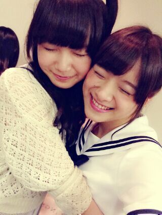
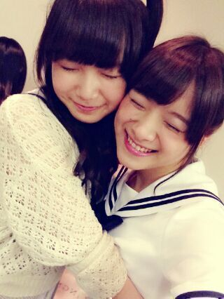
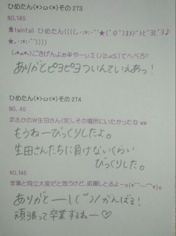

| 2013/06 17 Mon | ひめたん(*>ω<*)そ の306 |
こんばんわー
録音会終わりました！
ありがとうございましたっ
当たった方たちおめでとさんでした(*^ω^*)
あのね、ほんとにね、
恥ずかしかった///
なにせ初☆録音会だったので
もう緊張、緊張ですよーほんまにー
プレミア感がうすれちゃってもあれなんで
あんま語らずでいこうと思いますけれども
とりあえずどきどきしましまー
んでも 楽しかったです∩^ω^∩
えーっと、
みくもってぃは
今日で最後ということで...
正直あんま実感がわかなくて
ああーほんとに最後なんだーどうしようー
ってゆ１日だったけども
とりあえず、今まで本当にお疲れ様でした( ω )
みくもってぃはめちゃがんばり屋さんで
本当にいろんなことにストイックで
尊敬とゆーか、いつも思ってたよ。
受験時期が一緒だったから
きっとみくもってぃも辛かったと思うけど
あたしにとって
みくもってぃが心の支えに
なってくれてました
みくもってぃが頑張ってるから！って。
春からも大学との両立で
みんなより大変な立場だったのに
いつもニコニコしてたみくもってぃ
素敵やね☆ふふふ
5thのアンダーのPV撮影の時に
とまと と３人で
振り向いて踊り出す直前まで
お話するってゆー
ちょっと楽しいことしてました♪
おもひで(*´ω｀*)
乃木坂として会うのは
今日で最後かもしれないけども
さよならではないので
これからもずっとずっとずーと
みくもってぃは
ひめたのみんなのお姉さんでいてくれる！
乃木坂のメンバーとして
一緒に活動してきたってことはずっと
変わらないから忘れないからねっ

そして今日は
乃木どこ収録行ってきたー
楽しかった(*^ω^*)わちゃちゃーしたー
詳しくはオンエアで。
あっそれと
みんなでPV鑑賞会したよー♪
録音会終わりました！
ありがとうございましたっ
当たった方たちおめでとさんでした(*^ω^*)
あのね、ほんとにね、
恥ずかしかった///
なにせ初☆録音会だったので
もう緊張、緊張ですよーほんまにー
プレミア感がうすれちゃってもあれなんで
あんま語らずでいこうと思いますけれども
とりあえずどきどきしましまー
んでも 楽しかったです∩^ω^∩
えーっと、
みくもってぃは
今日で最後ということで...
正直あんま実感がわかなくて
ああーほんとに最後なんだーどうしようー
ってゆ１日だったけども
とりあえず、今まで本当にお疲れ様でした( ω )
みくもってぃはめちゃがんばり屋さんで
本当にいろんなことにストイックで
尊敬とゆーか、いつも思ってたよ。
受験時期が一緒だったから
きっとみくもってぃも辛かったと思うけど
あたしにとって
みくもってぃが心の支えに
なってくれてました
みくもってぃが頑張ってるから！って。
春からも大学との両立で
みんなより大変な立場だったのに
いつもニコニコしてたみくもってぃ
素敵やね☆ふふふ
5thのアンダーのPV撮影の時に
とまと と３人で
振り向いて踊り出す直前まで
お話するってゆー
ちょっと楽しいことしてました♪
おもひで(*´ω｀*)
乃木坂として会うのは
今日で最後かもしれないけども
さよならではないので
これからもずっとずっとずーと
みくもってぃは
ひめたのみんなのお姉さんでいてくれる！
乃木坂のメンバーとして
一緒に活動してきたってことはずっと
変わらないから忘れないからねっ

そして今日は
乃木どこ収録行ってきたー
楽しかった(*^ω^*)わちゃちゃーしたー
詳しくはオンエアで。
あっそれと
みんなでPV鑑賞会したよー♪

 乃木坂46として活動して、
乃木坂46として活動して、
印象に残った事(去年の事で)
また、自分が成長したなー。と思う所。
そーですね、去年のこととゆーと
デビューイヤーですからねー
そりゃひとつひとつのステージが
新鮮だったけれども、これからも
ピュアな気持ちは忘れないままでいたいです
成長かーそーかそーか
いや、まだまだこれからです。きゃぴ☆
ひめたんの 公式プロフィールに
「身長158cm」って
あると思うんですけど......背、伸びました？
一番最新のデータだと159.4\( ω )/
なかなか乃木坂のイベントに参加できなくて
ひめたんが遠くに行ってしまいそうだよ...
ずっと待っていてくれる？？
待ってる♪いつまでも待ってるよー
焦らんでいいからね。
でもずーっと待ってるってのは
覚えといてね∩^ω^∩
シャキイズムに出てくる告白のされかたは
ありですか？
てかこんな感じで告られたことがあるとか？
シャキイズムは可愛らしいね。
ガラスばーんからのーロマンスなんて
そう聞かないけどね。笑
メンバー内でユニットを組むとしたら
どんなメンバーがいい？
そうですねー既存のやつ無しでゆーと
ろってぃーかなりんあみ とかと
シャカシャカズボン履いて踊るのとか、
まちゅんゆったんあしゅ とかと
フリフリ履いて踊るのとか、
ろってぃーみさみさまいやん とかと
スタンドマイクで歌うとか。
最近知ったばかりの
初心者ひめたんファンなのですが、
これから応援を始めても
まだまだ遅くありませんかね？
遅いとかないですほんとに。
嬉しい(´;ω;｀)ありがとうう
もっともっと好きになってもらいたいし
恩返しできるよう頑張りますっ
ひめたんの"思い出"と言えば！
地元！故郷！広島！
最近地元に帰りたすぎて軽く病む(´・ω・｀)
地元民ーこれみたら連絡してよーふへへ
写真なんかはわりと大事にとってます
高校の思い出は全部携帯のメモリーやな。
ひめたんは学校ではいじりキャラ？
いじられキャラ？
自分ではわからんけども
きっといじられ...てんのかなあ。
いじるサイドでないのは確か！

(＊´・ω・＊)
コメント(148)
2013/06/17 00:00